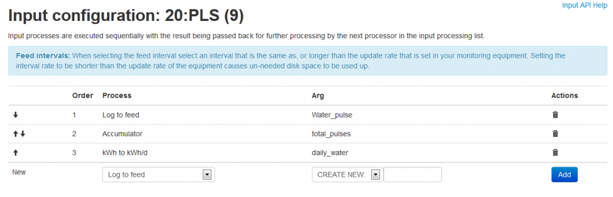

I just saw that v3 has come out
does this make is any easier to read water meters that have a read switch and the bounce that comes with it compared to an optical read that gives a low/high output with nice sharp signal ??
last time i used openenergy i had trouble with the meters dial slowly went out of sync with what i could count on the read switch....
is there any interest in water meter monitoring ?
as said i have a meter... very much interested in doing monitor on it... but if course i have to be able to count on the data i collect....
an idea right out of my mind could be some kind of calibration routine, ie a special sketch that you load and you tell it how many pulses each liter, then you open the tap and messure say excat 10 liters... and the emon board should now check if what you have told fits and maybe give you numbers for a software debounce routine so the "normal" sketch only counts the relly on state and the relly off state and not the noise that happens when the reed switch makes contact and when it breaks contact
on the emon cms side i also missed an easy way to see these things: flow rate, total usage, usage between readings, dayli usage....
one more thought that just came to mind, fine tune calibration.... you could do that by connecting a laptop to ftdi connector and hit enter to get a form of CLI... then enter what the dial says.... the sketch should then calc the difference and adjust with that... so quickly it should stay in sync....
does it make any sense?
Re: water meter... yeah again i know
I have not attempted this yet but have an interest in using my emonTX v2 to measure my gas and water meter. I have not verified if they have magnets in them yet but hope to do that this week. My thoughts on switch bounce was to have it look for a set time period of unchanging state before it declares the switch as having flipped. So, it reads the digital input, and then starts timing and waits for the value to not change for a set period of time. If it sees the same input value for 0.5 second or more, it concludes the switch has flipped and records it. I figured the switch bounce has to occur on a much smaller time scale than the meter wheel turning so setting that time period will not be an issue.
I am using a interrupt driven electrical power measuring routine to measure power (EmonLibPro), so my main loop simply repeats until the appropriate calculation / output interval. Adding a routine to check the input with a timer and flip a logical state seemed to me to be a low calculation overhead routine that might work. I am open to comments from more experienced folks if that assumption is incorrect.
Dan
Re: water meter... yeah again i know
I think you are on to something.... my meter says one pulse pr liter and even at full blast it takes about 7 sec's to get the one liter.... of course the more taps that are open the fast the wheel would spin... having 5 taps i guess that period could become very small, but who opens 5 taps at full blast at same time...
its rare i have kitchen tap open full at same time as dishwasher takes in water while clothes washer do the same.... and that was only 3 of them... now it would be less rare that the bathroom sink is open at full while someone takes a shower and the toilet is flushed.... :-D so in fact it was 6 taps... so its 1 sec or so if in theory all taps are open at full at same time....
last time i did monitor my usage i had most figures down.... flowrate even thou it was a pain to get right
usage between readings was also nasty to figure out....
with my best math everything was right, but then i discovered that over time the number on the meter and the one messuered started to drift more and more apart...
thou if i filled a bucket with 10 liters it would still messure so...
and as there was not an easy way for me to get that right it made no sense to continue...
not that openenegy is bad... far from... the idea is right... but it just seems to much focused on electricity alone
i wish that emoncms had calc routines for water build in... ie quick way to calc useage numbers... and routines to get the meter to stay in sync... i gues some stuff cant be calced at the backend but has to me figured on the board... stuff like flowate changes so fast it has to be done at board level...
again... openenergy is a good site.... i just wish it would add easy handling for water etc etc
Re: water meter... yeah again i know
@Boelle, did you have some luck to get a daily water use (or total) on the emoncms /server side?
I have read some older post from your water meter and I got the same problem.
My optical sensor gets the pulses and count them for 60 seconds and than it sends the total of pulses to emoncms. But How do I get a total of this at a daily rate? I tried with the power_to_kwhd but no luck.. I get this kind of graphics in emoncms now:
Do
So did somebody get this working yet?
Re: water meter... yeah again i know
Hi,
Take your pulse input and add an accumulator process, then you want to add "kWh to kWhd" after that. In other words, you'll have three feeds from the one input: instantaneous pulse count, total pulses (accumulator) and daily pulses (kWh to kWhd).
You can then visualise daily pulses feed using a bar chart.
This takes advantage of what "kWh to kWhd" really does, which is "incrementing counter to daily increments" - it doesn't matter if your count is of kWh or anything else :)
Re: water meter... yeah again i know
Tnx Dave,
It works like a charm :)
For reference to other users: a print screen from the input processors:

Re: water meter... yeah again i know
I added an oblique reference to this under the kWh to kWhd entry in the emonCMS documentation recently, but I can understand why nobody would read that just in case it did water monitoring. I think it might be possible to justify renaming processes to be less electricity specific at some future point.
Re: water meter... yeah again i know
Perhaps you could consider looking at the reed switch bounce in a different way - rather than trying to program it out, put in a simple circuit to fix it?
Its a very common problem in digital electronics, and can normally be reduced using a capacitor and a small circuit, look here for ideas.
http://www.labbookpages.co.uk/electronics/debounce.html
http://www.eng.utah.edu/~cs5780/debouncing.pdf
Re: water meter... yeah again i know
hmm...
been away for some time but might get back to monitoring...
the hardware way seems ok, will look again at the first link, just have to figure values so i dont filter out real event.
if i remember correct it took me 7 sec's to fill 1 liter at full blast from one tab, and dont think the pressure is high enough to half that if i open more
Re: water meter... yeah again i know
You shouldn't need to worry about a hardware debounce - just get the sketch to ignore interrupts within a certain time period of the first one.
If you think about what a debounce is, hardware or firmware it results in the same outcome - contacts above a certain frequency are ignored. You may as well avoid the hardware side altogether and set your maximum frequency in firmware where it's easy to adjust.
If one tap provides a pulse every 7 seconds, then I'm guessing you could probably set a maximum frequency of 1Hz (get the sketch to ignore interrupts that happen < 1000ms from the time of the last interrupt), allowing you to run seven taps full blast...
Re: water meter... yeah again i know
So slowly building my sketch now..
based it of the low power temp sketch even thou it will be powered by 5V... just wanting to keep it efficient.
Also planning to have it in sleep unless i actually use water... as for the debounce i got a few examples to go from
BUT: how do i make sure i dont loose data during a power outage? i mean i can easy count up the pulses etc and lucky me 1 pulse = 1 liter..
but should i really count one pulse then transmit and reset to 0 and then back to sleep and then just add them in emoncms?
and how do i calc the flow rate ? ie liters pr min or sec can that be done reliable in emoncms too?
Re: water meter... yeah again i know
https://github.com/openenergymonitor/emonTxFirmware/blob/master/emonTxV2...
suggests that the counted pulses are reset at each transmit right?
and flow are calculated at each pulse or interrupt... only downside would be that emoncms thinks the flow is high between transmits? or do i get it wrong?
Re: water meter... yeah again i know
tried to hack together a sketch, let me know if its total bonkers
#define RF_freq RF12_433MHZ // Frequency of RF12B module can be RF12_433MHZ, RF12_868MHZ or RF12_915MHZ. You should use the one matching the module you have.
const int nodeID = 18; // emonTx temperature RFM12B node ID - should be unique on network
const int networkGroup = 210; // emonTx RFM12B wireless network group - needs to be same as emonBase and emonGLCD
#define RF69_COMPAT 0 // set to 1 to use RFM69CW
#include <JeeLib.h> // make sure V12 (latest) is used if using RFM69CW
#include <avr/sleep.h>
ISR(WDT_vect) { Sleepy::watchdogEvent(); } // Attached JeeLib sleep function to Atmega328 watchdog -enables MCU to be put into sleep mode inbetween readings to reduce power consumption
typedef struct {
int flow;
int pulse;
int battery;
} Payload;
Payload emontx;
const int LEDpin = 9; //LED connected to Pin 9. Used to flash when transmitting
// Pulse counting settings
long pulseCount = 0; // Number of pulses.
unsigned long pulseTime,lastTime; // Used to measure flowrate.
double flow, elapsedl; // flow and liter
int ppl = 1; // pulses pr. liter.
long debouncing_time = 1000; //Debouncing Time in Milliseconds
volatile unsigned long last_micros;
void setup() {
Serial.begin(9600);
Serial.println("OpenTRV Pulse counting Example");
Serial.println("opentrv.org.uk");
Serial.print("Node: ");
Serial.print(nodeID);
Serial.print(" Freq: ");
if (RF_freq == RF12_433MHZ) Serial.print("433Mhz");
if (RF_freq == RF12_868MHZ) Serial.print("868Mhz");
if (RF_freq == RF12_915MHZ) Serial.print("915Mhz");
Serial.print(" Network: ");
Serial.println(networkGroup);
rf12_initialize(nodeID, RF_freq, networkGroup); // initialize RFM12B
rf12_control(0xC040); // set low-battery level to 2.2V i.s.o. 3.1V
delay(10);
rf12_sleep(RF12_SLEEP);
pinMode(LEDpin, OUTPUT); // Setup indicator LED
digitalWrite(LEDpin, LOW);
attachInterrupt(1, debounceInterrupt, RISING); // interrupt attached to pin3
}
void loop()
{
emontx.pulse=pulseCount; pulseCount=0;
emontx.battery=readVcc();
rf12_sleep(RF12_WAKEUP);
// if ready to send + exit loop if it gets stuck as it seems too
int i = 0; while (!rf12_canSend() && i<10) {rf12_recvDone(); i++;}
rf12_sendStart(0, &emontx, sizeof emontx);
// set the sync mode to 2 if the fuses are still the Arduino default
// mode 3 (full powerdown) can only be used with 258 CK startup fuses
rf12_sendWait(2);
rf12_sleep(RF12_SLEEP);
digitalWrite(LEDpin, HIGH); delay(2); digitalWrite(LEDpin, LOW); // flash LED
Sleepy::loseSomeTime;
}
long readVcc() {
long result;
ADMUX = _BV(REFS0) | _BV(MUX3) | _BV(MUX2) | _BV(MUX1);
delay(2);
ADCSRA |= _BV(ADSC);
while (bit_is_set(ADCSRA,ADSC));
result = ADCL;
result |= ADCH<<8;
result = 1126400L / result;
return result;
}
void debounceInterrupt() {
if((long)(micros() - last_micros) >= debouncing_time * 1000) {
onPulse();
last_micros = micros();
}
}
void onPulse()
{
lastTime = pulseTime; //used to measure time between pulses.
pulseTime = micros();
pulseCount++; //pulseCounter
emontx.flow = int((3600000000.0 / (pulseTime - lastTime))/ppl); //Calculate flowrate in Liters pr. hour
}
Re: water meter... yeah again i know
Bo, the generally perceived wisdom is you can't debounce a mechanical switch with interrupts. You need a history of what has gone before and when, and ideally after too, and that is not available in enough detail. I threw together a sketch for a gas meter, which Eric Amann says is working perfectly, and you're welcome to try that. But it works by polling, not interrupts (the interrupts are just the timebase) so it's not practical for a battery-powered rig.
Somewhere, probably under gas monitoring, there's a long discussion about the best strategy for lost and interrupted power/data. Basically, it's hard to win under every set of conditions. If you keep an 'all-time' total at source and send that at intervals, then at emonCMS you need to make assumptions to cater for resetting and roll-over, and differentiate to get rates, which will be wrong if data is lost in transmission, though the accumulated total will be correct. If you send rates in some guise or other, then emonCMS needs to make assumptions about the rate when data is lost, and the accumulated total will be wrong (and most probably the rate as well). You can try to store the accumulated count at source in EEPROM, but that has a limited number of writes, so cannot be done every few seconds (but from memory, daily is reasonable).
Re: water meter... yeah again i know
oki, will do a hunt for the sketch....i just figured interrupts was ok to use if yd did it carefull enough...
the idea of my sketch was to count the pulse on interrupt and ignore any pulses within the next second... my meter takes 2 sec's before it has taken a full turn with all taps open, 7 sec's if only one tap open.
also i would move the transmission stuff down in the interrupt routine so it would only transmit if something happens and hence have it in sleep most of the time
Re: water meter... yeah again i know
your sketch is the one posted at Fri, 25/04/2014 - 22:17
??
Re: water meter... yeah again i know
hmm.. looking a bit at emontx v2 vs v3...
is it to push it to have the v3 monitor 3 phases of electricity and a water meter at same time given that 3 phases will require 2 extra ac inputs.
if that is doable what is left of IO ?
Re: water meter... yeah again i know
looking at it... there is DIG 8 and 10 as pads... those i could use to read my heat meter, its an kamstrup multical 601 and has a 2 way Ir port on the front, it will not put out data unless requested so need both ways
there is one AC input so only need 2 more and could use DIG19 / ADC5 for one of them as i dont plan to messure temp
i dont see any other free ADC pins so are the only way to desolder the components at CT4 and use that one...
of course it all assumes that i hardwire this in .... using DIG2 to count pulses...
does it sound total bonkers? have i counted things wrong?
Re: water meter... yeah again i know
The sketch is on Github - emonTx V3 - Examples.
There's very little done in the ISR, so I don't see why it should add an appreciable load. I used the V3 and DIO2 for testing as it has the pull-down fitted, and most people are migrating towards the V3. You could use any convenient input.
I understand what you mean about sleeping but as I wrote above, you need to know what has happened before and after the real transition in order to determine that it really was a genuine transition that you are interested in. If you wake up on an interrupt, you can make a good guess at the state before the edge you triggered on, but how do you know the state that it will eventually settle to? - You might have seen a single isolated fast spike. You cannot know for certain.
I could not get the interrupt - triggered principle to work reliably, whereas the polled version appears to be totally reliable (I did say "appears"). You might be able to do better, but I was deliberately using a push-button switch that, using Trystan's original sketch, gave a count of anything between 10 and 40 pulses per transition.
Re: water meter... yeah again i know
Oki
but i want to monitor both my heat meter and water meter plus 3 phases on the electricity side
for that i would need 2 digital pins for the heat meter (IR tx and rx)
water meter is one digital input for pulse counting.
electricity is 3 ct's and 3 ac's
would that be possible using DIG 8 and 10 for the IR coms, DIG 2 to count pulses,
i then need 2 extra AC inputs and ADC5 / DIG19 could be used as i dont plan to messure temp. and CT4 with its components desoldered could be the other AC input
but again do i look at it the wrong way or can i do the hardware side in this way?
Re: water meter... yeah again i know
If you're using a V3, I think you'll need to do a bit more unsoldering because of the pull-up resistor from A5 to D5 - see the circuit diagram on Solderpad. When that's done, you have A0 - A4 on plugs, A5 is on the terminal strip.
D2 and D5 are also on the terminal strip, D9 is adjacent and D10 is near the ISP header. D11 (MOSI), D12 (MISO) & D13 (SCK) are on the ISP header.
You might be able to use DIO 6 for both the LED and your heat meter TX, depending on how important the LED is to you and whether the heat meter ignores stuff it does not understand.
The neatest arrangement I think is D2 for the water meter, add a terminal in D9 and use that plus D5 for the heat meter. That leaves D6 for the LED and D10 spare.
Re: water meter... yeah again i know
yep i think the heat meter ignores if it does not understand... LED... hmm... not as important thou nice to have for debug... i even have a sketch somewhere for the heat meter, just need to dig it out...
so at least its possible to connect it all hardware vise.... is it hard to mod the libs to calc 3phase with 3 ct and 3 ac's ?
Re: water meter... yeah again i know
"is it hard to mod the libs to calc 3phase with 3 ct and 3 ac's" It shouldn't be if you know about OOP and C++ classes.
Re: water meter... yeah again i know
hehehe, then it is :-/
Re: water meter... yeah again i know
Depending on which sleep mode you guys use, Timers can also be used to wake you up. Perhaps you could have the switch IO pin ISR do nothing more than start a 100 msec eggtimer (or restart it if it's already running). When that eggtimer ISR finally fires, you know the dust has settled for 100 msecs and it can read the pin state now, and compare it to its previous value.
But you're still exposed to the cpu load risk associated with feeding an undebounced signal straight into an interrupt pin. If there's ringing on that signal, the CPU might end up doing nothing other than servicing that ISR. You might be able to solve that by having the IO pin ISR disable itself, and the eggtimer ISR re-enable it.
Re: water meter... yeah again i know
All you actually need to do, having created three instances of EnergyMonitor (one for each phase) is to set up each with a different voltage input pin (so instead of three or four instances having the same voltage pin, which is what happens when the 4 currents are all on the same phase, each has its own). You don't have to touch the library at all.
Re: water meter... yeah again i know
oki, will give it a go once i got the board
but its in emonlib i have to do the edits right? ie to edit the voltagepin for each instance
Re: water meter... yeah again i know
It's in your sketch that you instantiate EnergyMonitor and feed it the pin numbers.
Re: water meter... yeah again i know
now i'm lost
when i look in the example sketches they dont use pin numbers, so they must get them from emonlib?
will look again to make sure its me that was blind
EDIT:
So looking in https://github.com/openenergymonitor/emonTxFirmware/blob/master/emonTxV3/RFM12B/Examples/emonTxV3_RealPower_Voltage/emonTxV3_RealPower_Voltage.ino
i cant see anywhere that it tells what pin AC input is on... so it must be in emonlib right? there i see them... but just need to be sure where to do edits
Re: water meter... yeah again i know
It depends on how you initialise the class instance, in emonLib there are two ways. One way sets them by channel number - that's what you were looking at - voltageTX(...) and currentTX(...). But look at voltage(...) and current(...) and they accept pin numbers. The two pairs achieve the same thing, just by a different route.
It's much better to change your sketch than the library, because the Arduino IDE gets totally mixed up when searching for libraries - the rules it follows elude me.
Re: water meter... yeah again i know
hmm just saw a note on github:
Note: CT must be clipped round either the Live or Neutral wire, not both!
putting a CT arround the neutral would that not give me a total of the 3 phases?
Re: water meter... yeah again i know
What current flows in the neutral? (Look up Building Blocks if you're unsure.)
Re: water meter... yeah again i know
the blue or neutral or N.. i would be tempted to say the sum of the 3 phases...
looking in building blocks but have not found the end of the rainbow yet
Re: water meter... yeah again i know
i see stuff are not the same in the UK....
in DK we have all 3 phases in the house... so we have 3 main fuses, big ones... one for each phase, after that a earth leakage relay where each phase and the neutral is connected, it trips if there is a mismatch between in and out of more than 30mA... after than in my case 1 of the phases are used to supply 1 part of the flat and the next phase supply the other half. stove and clothes washer are connected to 3 phase over a seperate breaker for each wall outlet..
but its only the stove that is 3 phase, the washer is single phase...
i suspect my idea of one CT on the neutral is only good if every thing is single phase ?
Re: water meter... yeah again i know
looked at most of it but did not find a clue on if i could get away with one CT on the blue / neutral..
but i guess not ???
Re: water meter... yeah again i know
dooh... even if i could messure on the neutral then it would require that the 3 phases are not angled, but they are 120 degrees... so out with that idea...
Re: water meter... yeah again i know
You need to be thinking phasors. The neutral current is indeed the sum of the three currents in the three phases - the vector sum. So if the three phases are accurately balanced, the vector sum is zero - there is no neutral current and you can throw away the neutral conductor, because it's doing nothing. In reality of course, the phases are not balanced so the neutral carries only the (vector) difference current.
Have you noticed there's no neutral conductor on the grid transmission lines, where the load is always relatively well balanced? Some three-phase cables have what is called a "reduced neutral" - the area of the neutral conductor is reduced compared to the phase conductors because it should be carrying very little current. (It makes the cable cheaper!)
Re: water meter... yeah again i know
yeah a lot of knowledge have turned to vapour over the years... i did attend tech college to be a electrician but never found an apprenticeship so could not continue.... and the knowledge have just disapeared like air from a party baloon.
it was just a tempting thought to clip one CT on the neutral and then one AC adapter... but now i see a bit of light at the tunnel...
i just wonder how much accuracy difference there is between 1 AC adapter for 3 phases and 3 ac adapters - 1 for each phase
Re: water meter... yeah again i know
"i just wonder how much accuracy difference there is between 1 AC adapter for 3 phases and 3 ac adapters - 1 for each phase"
That depends completely on how stiff and how well balanced the supply is where you are, and the only way to know will be to measure it over a period of time. If the total load is always well balanced, then all three voltages will rise and fall together. If the supply is very stiff, all three voltages will scarcely move at all. Anything else and you have unbalanced voltages, to what degree is anyone's guess. You can get some idea by measuring the voltage dip when you connect a large load on one phase.
Re: water meter... yeah again i know
well we have a distribution transformer station across the street no more than 20 meters from my window, but i take that is no gurantee at all, just a pointer...
but lets assume that everything is nice and 100 equal balanced... how much will the difference be between 1 ac adapter and 3 ?
Re: water meter... yeah again i know
As I wrote above, it is anyone's guess. You need to measure and record the three voltages and see what the difference is at various times of the day and week (and maybe the year too!).
The phases should be within a few percent of each other, but that is not guaranteed.
Re: water meter... yeah again i know
So i got my heat meter on emoncms and electricity...
only thing left is the damm water meter that i know have a reed switch that has bounce noise like hell
what is the "standard" arround this nowadays? hardware debounce or software?
for hardware i had this small circuit in mind
Re: water meter... yeah again i know
Eric seemed pleased with my interrupt-driven polled software debounce - http://openenergymonitor.org/emon/node/5022#comment-21046
But a hardware debounce as well should not do any harm.
Re: water meter... yeah again i know
oki, i just have the 100nf's and resistors, and would avoid to change the normal pulse sketch
Re: water meter... yeah again i know
Got the 2nd node up and attached to the water meter
copied over the pulse example and changed ppwh to ppl and set it to 1, my meter gives one pulse for each liter
and then i transmit the number of pulses between each reading and i try to also transmit the flow rate in liters each hour
will this line do that or is my math wrong?:
emontx.power = int((3600000000.0 / (pulseTime - lastTime))/ppl);
sketch attached also
Re: water meter... yeah again i know
Your maths looks wrong. Say you have a flow rate of 1 l/s, that's 3600 l/h.
pulseTime - lastTIme = 1 s = 1000 (ms), and you said ppl = 1. You want the left hand side to be 3600, and that is not 3600000000.0 / 1000. It looks as if you have too many 0's there.
Re: water meter... yeah again i know
:-/ me just blindly copied over the pulse example for electricity pulse counting...
So have removed 3 0's and will test later on the day....
Re: water meter... yeah again i know
btw... using timeseries engine only is there a easy way i can clear data without touching emoncms as such? can i just delete the data files?
Re: water meter... yeah again i know
So i have looked at my water usage and i'm really in doubt if its counting right...
http://energymonitor-dk.dns4e.net/emoncms/boelle/water
if you zoom in on today at arround 17:11:15 to 17:14:30 at the first graph, it says 1 at the hole time so that is 1 pulse for all readings... that sounds ok to me since that means no bounce or false triggers...
but then if you look at same time on the liter/h and liter/15 mins it said just shy of 30 liters when i got out from the shower...
30 liters for a shower does that sound right?
the 3 last graphs are bargraphs with 86400sec interval, 3600 interval and 900 sec interval... both with delta of 1... they are based on a accumulate feed of the first feed that simply just stores the pulses between readings...
one tap at full blast takes 7 sec to fill a 1 liter jar
are there much else i can do to test if it reads right? ex. take a 10 liter bucket and fill it as fast i can after the 15 min graph has said 0 for a few times... ie after 1 hour of no use?
Re: water meter... yeah again i know
You could try holding a bucket of known capacity under the shower and timing how long it takes to fill it, then you know the flow rate for the shower and by timing how long it takes you to have a shower, you can calculate the volume of water you use.
And you can of course read your meter at intervals (every 15 min, hourly, daily, weekly?) and check that you have the same number of pulses as the meter shows (you should see 1000 pulses per m3).
I only checked once, I used 40 l for a shower, so your 30 l is likely to be close.
Re: water meter... yeah again i know
yep
i did the math and each liters takes 7 sec... so my 3 min of shower time comes to about 25 liters...
i was just shocked that so much water can pass in that little time...
now when i'm 100% sure it work as it should is there an easy way to clear the data?
Re: water meter... yeah again i know
so no easy way to just clear the readings without touching the feeds or anythingelse?
also how do i create a feed that takes the difference between the readings? i want to use that to record usage on my heat meter between the readings
Re: water meter... yeah again i know
I don't know about clearing feeds - but I've seen posts about that recently. Try a search.
As for the difference, you have "-input" in the input processing, will that not do what you want? I.E:
In input 1
Log to feed [Input 1]
-input [2]
log to feed [difference]
Re: water meter... yeah again i know
it will do it... but as it is an ever increasing value would that not generate a negative new feed? but its close.. i can see that much
the reason why i have asked abut the clearing feed is that a search did not help me much... sure me that is stupid :-D
Re: water meter... yeah again i know
found this link... but no soloution to what i want...
http://openenergymonitor.org/emon/node/2931
at page 12 of search and nothing that looks remotely what i'm after
Re: water meter... yeah again i know
tried to remove the -input thing... not it has stopped logging everything and i cant remove edit that input....
the other i can edit but they are not updating anymore
Re: water meter... yeah again i know
did a reboot and now they are all listed as inactive...
Re: water meter... yeah again i know
had to delete the inputs to get it going... so yes one way is to delete and rebuild everything to clear data...
Re: water meter... yeah again i know
i updated my water meter sketch...
the meter is still 1 pulse each liter and have run fine for weeks now without a false count,
BUT
i never came arround to have it calce the flow rate and send it over.
i figured since i get one pulse for each liter it was just a matter of calculate the time difference between pulses and then divide than in to the number of ms that happens on an hour... i did a check on calculator and if i have a difference in 7000ms between each pulse that would get me about 500 liters an hour...
so i adjusted my sketch but changed from int to float since my numbers would now be 500.00 of course this would go up and down as how much open the tap is
i have attached the sketch
NOW
i adjusted emonhub.conf to:
(last part)
[[5]]
datacodes = h, h, f, f, f, f, f, f, f, f,
[[6]]
datacodes = f, f,
for some reason it will mark node 6 as inactive, but if i change it to
[[5]]
datacodes = h, h, f, f, f, f, f, f, f, f,
#[[6]]
#datacodes = f, f,
node 6 is active again, thou it reports 3 inputs and not 2 like it should
i have eyeballed the sketch and cant see any obvious errors... and i cant see any wrong in the conf either...
but i have made a booboo somewhere...can i get a clear pointer ?
Re: water meter... yeah again i know
maybe these 2 lines in the sketch could go away?
double power, elapsedWh; // power and energy
int ppl = 1; // Pulses per Liter - found or set on the meter.
Re: water meter... yeah again i know
of course emonhub.conf should be :
[[5]]
datacodes = h, h, f, f, f, f, f, f, f, f,
[[6]]
datacodes = f, h,
last one changed from f to h as it is an int...
Re: water meter... yeah again i know
that was much better... thou in emoncms i did get a number around 5 point something and not the 500 figured i calc'ed before i flashed the sketch
have i simply done my math in the sketch wrong?
emontx.power = float((3600000.0 / (pulseTime - lastTime))); //Calculate flow
it should be liters each hour...
Re: water meter... yeah again i know
did a test this morning, 1.22 was the highest i could get
Re: water meter... yeah again i know
What are the units of time? How many microseconds are there in an hour? ! ! !
Re: water meter... yeah again i know
there are 1000ms on a sec... thats 60000 ms each min... again there are 60 of those on a hour .... 3600000ms ?
Re: water meter... yeah again i know
there are 1000ms on a sec... thats 60000 ms each min... again there are 60 of those on a hour .... 3600000ms ?
All of this is true but not quite what Robert asked, note his clue !
Re: water meter... yeah again i know
had a sudden visit...
hmm... it's something with micro... just a wild guess here, but what i get is just how many times the time difference between each pulse fits inside an hour?
Re: water meter... yeah again i know
or am i mixing micro and mili here?
Re: water meter... yeah again i know
bugger....
the time difference is micro-second right? clue to me is micros
but i'm using mili-second also....
1 hour should be 3600000000 micro seconds right?
so if i'm right the formula should be
emontx.power = float((3600000000 / (pulseTime - lastTime))); //Calculate flow
or am i still wrong?
Re: water meter... yeah again i know
Bo, stop panicking, sit back and just read the code. Read the code that the processor is running, not the code that you're imagining that's in your head. You're using two time units, ms & µs, but for quite separate purposes. Just trace through and check which is used for what purpose.
[I'm not trying to be nasty, I'm giving you the benefit of personal experience!]
Re: water meter... yeah again i know
i know... not thinking bad thoughts here.... just trying to figure what i'm doing wrong :-)
but yes i just discovered the 2 time units issue above.... on one side of the division i used mili's and on the other micro's
i corrected that, but will double check my math in a bit
Re: water meter... yeah again i know
so this is how i understand the code that is triggered when a pulse comes in
it sets last time to pulsetime
and then pulse time is set to mirosec since start
and it will add 1 to pulsecount
it then uses pulsetime and last time to figure how many times the difference will fit inside one hour
the last bit can also be said like how many times will the difference fit inside an hour if the flow rate is constant..
so is my brains understanding of it in sync with what really happens?
Re: water meter... yeah again i know
That's about right. The 'flow rate' you get is the flow rate between the last pulse and this one.
The millisecond timer has nothing to do with the pulses and flow rate, all it does is trigger the transmission. So what is actually transmitted is the flow rate between the last pulse before transmission and the one before that one, and the number of pulses since the last transmission. You do not send (unless there has been only one pulse), the average flow rate between transmissions. If there have been no pulses,
you still send the last average flow rate,[wrong!] you send a zero and if there is more than 71.6 minutes between pulses, the micros( ) counter has overflowed more than once and the answer is wrong anyway.Re: water meter... yeah again i know
oki, then i'm closer now...
both pulse count and flowrate is reset between transmission so it will go to 0 pretty fast after i close the tab...
Re: water meter... yeah again i know
the first number when tab was at full blast was 5700
at 2nd reading it was 1219...
but it makes sense since you said i transmit the flow rate between the last pulse before transmission and the one before that one,
will have to poke my mind on how to get the current flow rate as long the tab is open
Re: water meter... yeah again i know
would the pulse as trigger to transmit be the solution or should i simply reduce the time between transmit?
Re: water meter... yeah again i know
I don't know the answer to this - I have not thought about it. But there are clearly some improvements that need to be made to the sketch that you are using so that you avoid sending misleading data.
For example, if I am correct, and you use water at 5700 l/h, then shut off the tap and do not use any more water for 8 hours, then although the number of pulses will be zero for 8 hours, the flow rate will show 45600 l used.[Wrong!]I think you should change small things like that. Remember you are also able to process the data in emonCMS, so there you can calculate the average flow rate over periods of time, for example. You know what information you want, I think you must make your sketch and emonCMS together give you that information.
Re: water meter... yeah again i know
hmm... the flow rate goes to 0 once i have closed the tab... so you are not quite correct... but the 5700 number is the first number i get when i open the tab... at next transmit it drops to 1219 and will stay at that as long the tab is at full blast. once i close the tab the flow number drops to 0 after a max of 2 transmits and it will stay there until i open again
what i know is that the 1219 number is not correct.. it should be half that... but i will double check that its still 1 liter in 7 sec
for used liters i use pulses counted only... one pulse is one liter... on emoncms i log both the pulses between transmit and i acc. them so i know how much used since start
Re: water meter... yeah again i know
bummer... i rechecked the flow rate.
its not 1 liter in 7 sec but 1.3 liters
EDIT: means the approx liters an hour should be 668,57
Re: water meter... yeah again i know
OK, I missed seeing that emontx.power is set to zero when the message is transmitted, so you are right - it will not report the wrong value when no pulses are being received.
Re: water meter... yeah again i know
Your 5700 number - how long is it since the last pulse when you get that number? Why I ask is the micros( ) counter will overflow after approx 71.6 minutes, so if it has has overflowed more than once (i.e. it has been longer than 71.6 minutes), that would explain a wrong number (but not if it is consistently 5700).
Re: water meter... yeah again i know
oh...
that can be anything... but its only the first time after i open the tab.... so i guess if i only close the tab for like 5 min then the first number reported when i open again will be more close to the correct value...
so a early in the morning and brain not in gear wild guess: could it work if i also reset micros() after each transmit ?
Re: water meter... yeah again i know
"could it work if i also reset micros() after each transmit ?" Then you would lose the time of the last pulse.
Re: water meter... yeah again i know
of course...
hmm, dont know how i can solve this one, might throw the towel in the ring and just monitor my usage
Re: water meter... yeah again i know
Why do you need micros( ) here? If your meter is ~ 1 pulse / l, what is the minimum time between pulses with every tap open? i.e, what is your maximum flow rate? Would millis( ) give you adequate accuracy? If your maximum flow is 10 l/s, a 1 ms error would give you a reading good to 1% (1 ms error in 100 ms) and it gets better at lower flow rates.
Millis( ) of course overflows 1000 times less frequently.
Re: water meter... yeah again i know
Why? i dont know... i'm simply just reusing a sketch without know much about programming in general
the meter is excatly 1 pulse / Liter... unless some idiot have stamped the wrong numbers on it.
the only way i could figure the minimum time was to repeat the "fill bowl in 7 sec" like last night. with shower hot and cold and tap in bath hot and cold and the same in kitchen i can still fill it with 1.3 liters in 7 sec.... so must have good pressure for a 1st floor flat.
1% sounds fine for flow rate indication...
10 liter a sec sounds high... i would say about 2 if everything is taking water (kitchen tap, dish washer, clothes washer, bath tap, shower, wc) given that the kitchen tap is taking 0.18 liter a sec no matter if one tap or 3 is open.
but as you say it can only get better...
if millis overflow will i not get the same issue as with micros? but not so fast as with micros...
Re: water meter... yeah again i know
I think you want to use millis( ) for both the transmit interval and pulse timing. Millis( ) will of course overflow and wrap around - but it's only going to worry you (i.e. you get two overflows without a pulse) if you go on holiday and don't use any water for at least 4¼ million seconds - just over 7 weeks. So unless you have a round-the-world cruise planned...
Re: water meter... yeah again i know
not in my plans anytime soon no... unless somebody is really jumping up and down and wants to pay me for it :-D
so my latest attached sketch should do it if i just use millis for both transmit and pulse timing?
Re: water meter... yeah again i know
that one is a hell long back... and i ight have changed it so here is a fresh copy before any changes
Re: water meter... yeah again i know
I think you might need an unsigned long for lastpoll, see here: http://playground.arduino.cc/Code/TimingRollover
Other than that, just replace micros( ) and don't forget to lose 3 zeros when calculating the "power". (You ought to rename that "flowRate".)
Re: water meter... yeah again i know
will do.... fingers crossed tomorrow :-)
Re: water meter... yeah again i know
girlfriend/partner did a showner and i got numbers arround 720 liters/ hour.... much better...
a normal shower eats about 35 liters and takes 3 mins... so pretty close now i must say
Re: water meter... yeah again i know
have been running little under a week and must say this runs ok now.... thanks a bunch
have some problems with one electricity feed that shows up negative... but will create another thread for that
Re: water meter... yeah again i know
Boelle (Bølle?), you seem like you've come far in your project -- I'm wanting to do the same stuff, but still just getting the building blocks together (should be good now, though).
Given we're both Danish, maybe I could lend some information from you - where did you connect on your electricity board, there's nowhere I have free access to the phases to clip on the CT (three of them I guess from reading the above). Maybe I need to call an electrician to make the wires accessible in a safe manner...
And did you purchase a separate water-meter to measure water usage? I was hoping to do the same, but didn't find anything in the cheap range... My current water meter - from the water company - is purely analog.
Thanks
Lasse
Re: water meter... yeah again i know
Hi there...
for the water meter i was lucky in talking the water company in to change mine out with one that has pulse output in the form of a read switch, you need to do some hardware debounce but not the biggest problem :-D
I done not use CT's but the flasher/blinker on the meter itself... for that i simply took off the fuse panel cover and routed a 3 core wire through the wall next to the mains wires that comes from the meter... i then placed a photo transistor in front of the flasher with some good double stick tape. it far more precise than CT's given that non of the Emontx's so far have true 3 phase support... they only have 1 AC input and it will always be a math fix to figure the 2 other AC's... so yes in the end i just opted to let me meter do all the math.
Where about in DK do you live? you are welcome to send me a PM also... but be warned that the forum does not send out an mail so it might be some time before i send an reply...